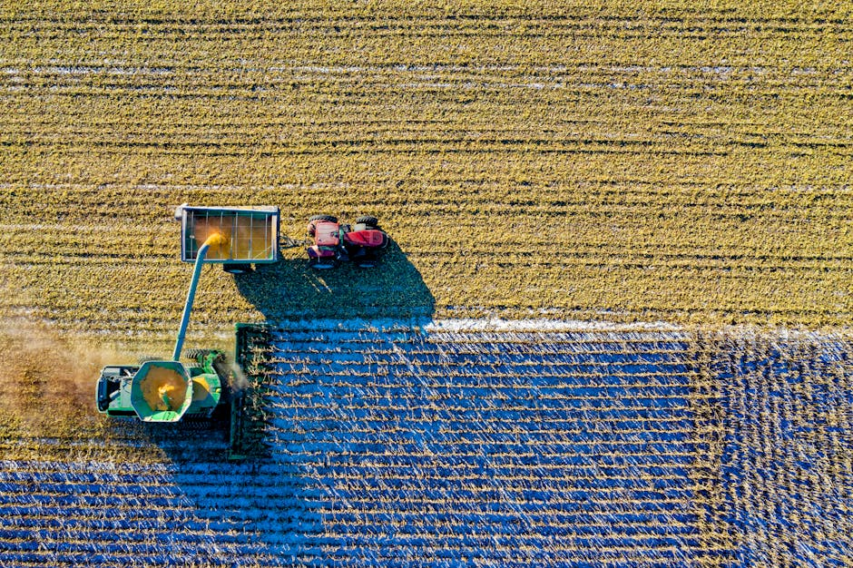

Predicting Crop Health using open-source geospatial data and ground truth data collected in Telangana State

This AI application and replication-kit is about an AI-based crop type map for Telangana. This should be of use to anyone wishing to support sustainable farming practices and evidence-based decision-making for agricultural. Also, this can be used to empower you, as a local business, and NGOs, or a government agency to develop digital agricultural applications. The application focuses on creating localized ground-truth data on several different crop related variables to train AI models tailored to Telangana's diverse agricultural landscape. This includes an open-access ground-truth dataset, a data challenge with openly available models for yield prediction, a crop classification model using satellite imagery applied to map the whole state of Telangana, and a roadmap for AI implementation in agriculture. Datasets, AI models, and crop maps are all openly available as an open-source replication kit and digital public good.
Data characteristics
The Data is fully open-sourced and can be accessed at the Telangana Data Exchange Platform: ADEX
• License: CC BY 4.0
• Data Type: Tabular
• Key Variables: Crop type (6), Crop Health, Crop Yield, Irrigation Methods.
• Appr. No of observations: > 12000
• Appr. No of dimensions: 45
• Covering 6 Mandals in Telangana
• Format: dbf, csv
The data was collected over the span of 1.5 years covering different crop cycles between 2022 and 2024. The Data Collection was conducted by WRMS via on-the-ground visits of the fields and by surveying farmers in Telangana State.
A responsible AI Assessment was undertaken for this dataset / use case to help AI developers and project managers to identify, assess and mitigate potential harms and biases in AI. For methodology, see https://www.bmz-digital.global/en/news/ethical-crash-test-for-ai-how-to-navigate-the-road-to-responsible-innovation/
Model characteristics
Processed Data:
The ground truth data was combined with open-source Sentinel-2 data to create a geospatial dataset with crop type as labels.
The processed dataset can be accessed here: Processed Data
Code for Crop Classification Model:
Code to create the training data and for training the models for crop mapping can be accessed here: Code
Application:
The resulting shapefiles that predict crop type for the state of Telangana are deployed on DICRA – a digital public good ran by the Indian Development Bank NABARD and UNDP: DICRA
Based on the collected data, GIZ organised a data challenged together with Zindi to build state-of-the-art crop mapping models. The outcomes of the challenge can be accessed here: Zindi
How to use
You can make use of the existing models on yield prediction and crop type mapping to infer other similar datapoints – for example neighbouring states of Telangana. Additionally, you can try to combine the dataset with other existing open-source datasets from the ADEX platform and conduct research/commercial scoping on these.
The present dataset is quite unique in the fact that it includes observations such as irrigation methods, crop health and expected yield. You may combine these with other data sources, i.e. satellite/remote sensing data (open-source or commercial) to build high-quality crop monitoring/recommendation systems to support various agricultural entities, farmers and decision makers in India. This could also inform commercial products.
As crop mapping is a prominent use-case, the data can be used for benchmarking different available crop datasets and models or inform foundational geospatial models as well as constitute to a region-wide crop mapping. Potential partners on the ground for collaboration, commercial involvement or funding are the Telangana Government, specifically the IT and Agricultural department and Nabard Dicra.
Datasets
Use cases
About
Powered by / Provided by: WRMS - Weather Risk Management Services (https://wrmsglobal.com/), ZINDI (https://zindi.africa/), Vertify Earth (https://vertify.earth/)
Catalyzed by: FAIR Forward - AI for All (https://www.bmz-digital.global/en/overview-of-initiatives/fair-forward/), GIZ
Financed by: BMZ (https://www.bmz-digital.global/en/digital-transformation-and-development-cooperation/)
Authors: Jonas Nothnagel
Contact: WRMS (connect@wrmsglobal.com)